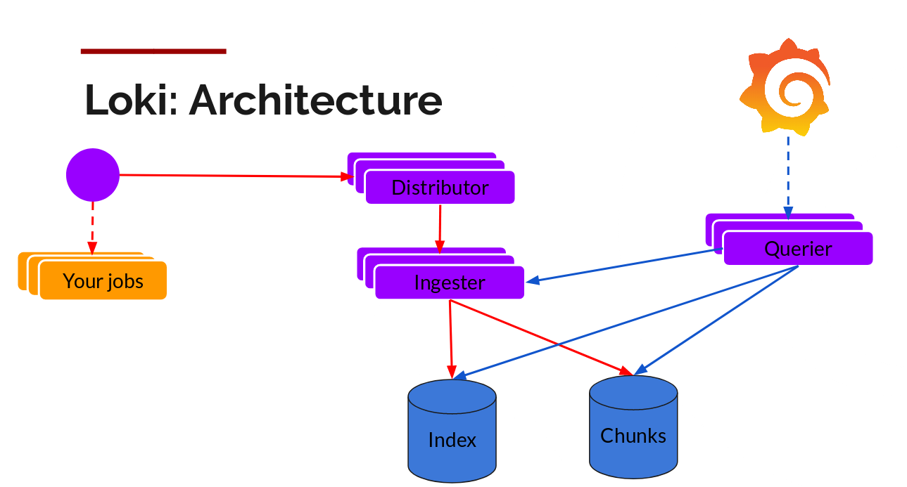
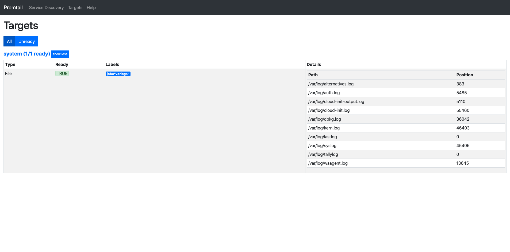

Loki-简介
文章目录
Loki 简介
在日志收集领域，我们听到更多的是ELK、EFK等等解决方案，整体架构通过Fluent、LogStash等Agent组件收集日志文件，然后发送给ElasticSearch(后续用ES来替代)进行存储，并对日志进行全文索引，在通过Kibana进行可视化分析查看。确实这个在对于日志的分析以及复杂查询来说是一个非常棒的解决方案。
但是EFK的方案在现今云原生趋势下的整体解决方案中，EFK明显重很多，首先对于整个系统规模上会比较复杂，至少我们需要在Elastic Search做很多优化以及分布式部署来承载更大的日志负载。并且ES相对来说，需要占用大量的内存来完成日志的收集功能。另外由于ES是一个分布式的全文搜索引擎，其复杂程度与我们日志收集系统的需求很大程度上像是杀鸡焉用牛刀的感觉。
Loki就是针对与ELK日志解决方案上一个更优、更简单、成本更低的解决方案。Loki是如何做到的？下面我们一一来介绍
Loki整体架构
这是Loki官网Blog中的一张架构图。

从Loki的架构图中我们可以得出以下结论。
1、首先Loki中包含很多的组件，有Distributor、Ingester、Querier等。
2、Loki对应的存储有两种方式的存储，一种是Index、一种是Chunks。
3、对于Distributor、Ingester、Querier这几个组件，从图中我们能得出这些组件是可以横向扩展的。这种设计必然可以提高日志收集系统的吞吐。
4、Loki可以作为一个数据源，然后通过grafana进行展示。
5、最左边的Your jobs必然是和EFK中的Fluentd或者ELK中的Logstash一样是一种Agent收集日志组件。
如果我们再仔细思考架构图，我们还可以得出如下的一些结论。
1、从图中可以得出Loki必然是一个读写分离架构。所有的读请求经过Querier组件，所有些请求经过Distributor组件。
2、Loki分成两种存储，一种叫Index(索引)，一种叫Chunk(块)。通过命名可以很清晰地明白index为日志的索引存储，而Chunk为日志的内容存储。查询的时候是按照先找索引再找到具体的chunk存储。
3、通过Querier查询数据的时候有三条线，我们也可以大胆的猜测Ingester组件中必然有一部分缓存的日志内容，还没有来得及刷入到index和chunk存储中。
快速上手loki
Loki的架构中，所有的组件可以进行单独部署，也就是组件的微服务部署。同时也支持所有组件部署在一个单一的Loki中，为了快速上手，我们则将loki的所有的组件进行整体部署。
部署Loki
获取Loki的配置文件
wget https://raw.githubusercontent.com/grafana/loki/v1.6.0/cmd/loki/loki-local-config.yaml -O loki-config.yaml运行Loki容器
docker run --name loki -d -v $(pwd):/mnt/config -p 3100:3100 grafana/loki:1.6.0 -config.file=/mnt/config/loki-config.yaml部署Promtail
获取Promtail的配置文件
wget https://raw.githubusercontent.com/grafana/loki/v1.6.0/cmd/promtail/promtail-docker-config.yaml -O promtail-config.yaml需要修改Promtail中配置文件为docker宿主机的内网ip。如下
clients:
- url: http://10.0.0.4:3100/loki/api/v1/push运行Promtail容器
|
|
查看运行情况
本身Loki没有UI界面，我们可以通过LogCLI或者api来查看相关日志。而Promtail有一个类似于Prometheus的界面，用于查看配置所有的job状态以及每个job读取文件的状态。
查看容器运行情况
root@test-zoubinbin:/opt# docker ps
CONTAINER ID IMAGE COMMAND CREATED STATUS PORTS NAMES
1306d54777c2 grafana/promtail:1.6.0 "/usr/bin/promtail -…" 2 seconds ago Up 1 second 0.0.0.0:9080->9080/tcp promtail
41fd72f7f8e0 grafana/loki:1.6.0 "/usr/bin/loki -conf…" 4 minutes ago Up 4 minutes 0.0.0.0:3100->3100/tcp loki查看Promtail运行情况

安装LogCLI
root@test-zoubinbin:/opt# wget https://github.com/grafana/loki/releases/download/v1.6.0/logcli-linux-amd64.zip
root@test-zoubinbin:/opt# unzip logcli-linux-amd64.zip
root@test-zoubinbin:/opt# mv logcli-linux-amd64 logcli通过LogCLI查看日志
#设置环境变量
root@test-zoubinbin:/opt# export LOKI_ADDR=http://localhost:3100
# 查询标签job的所有值
root@test-zoubinbin:/opt# ./logcli labels job
http://localhost:3100/loki/api/v1/label/job/values?end=1599456938716954301&start=1599453338716954301
varlogs
# 查询日志
root@test-zoubinbin:/opt# ./logcli query '{job="varlogs"}'
http://localhost:3100/loki/api/v1/query_range?direction=BACKWARD&end=1599456984481091532&limit=30&query=%7Bjob%3D%22varlogs%22%7D&start=1599453384481091532
Common labels: {filename="/var/log/syslog", job="varlogs"}
2020-09-07T05:35:05Z {} Sep 7 05:35:05 test-zoubinbin systemd-timesyncd[728]: Synchronized to time server 91.189.89.198:123 (ntp.ubuntu.com).
2020-09-07T05:35:05Z {} Sep 7 05:35:05 test-zoubinbin systemd-timesyncd[728]: Timed out waiting for reply from 91.189.89.199:123 (ntp.ubuntu.com).
2020-09-07T05:34:58Z {} Sep 7 05:34:55 test-zoubinbin systemd-timesyncd[728]: Network configuration changed, trying to establish connection.
2020-09-07T05:34:58Z {} Sep 7 05:34:55 test-zoubinbin systemd-networkd[939]: veth8976032: Gained IPv6LL
.......LogCLI更多操作请参考：https://grafana.com/docs/loki/latest/getting-started/logcli/
通过Loki api查看日志
root@test-zoubinbin:/opt# curl -G -s "http://localhost:3100/loki/api/v1/query" --data-urlencode 'query={job="varlogs"}' | jq
{
"status": "success",
"data": {
"resultType": "streams",
"result": [
{
"stream": {
"filename": "/var/log/dpkg.log",
"job": "varlogs"
},
"values": [
[
"1599457434034812888",
"2020-09-07 05:43:53 status installed libc-bin:amd64 2.27-3ubuntu1.2"
],
[
"1599457432283691625",
"2020-09-07 05:43:52 status half-configured libc-bin:amd64 2.27-3ubuntu1.2"
],
[
"1599457432283689825",
"2020-09-07 05:43:52 trigproc libc-bin:amd64 2.27-3ubuntu1.2 "
],
[
"1599457432283583125",
"2020-09-07 05:43:52 status installed man-db:amd64 2.8.3-2ubuntu0.1"
...... Loki 更多api请参考：https://grafana.com/docs/loki/latest/api/#lokis-http-api
本文以主要介绍Loki的架构以及Loki的快速入手，后续将通过源码分析的方式来介绍Loki中每一个组件，架构上的一些优点以及一些可以提供学习的点。
文章作者 zbbkeepgoing
上次更新 2020-08-28
许可协议 MIT